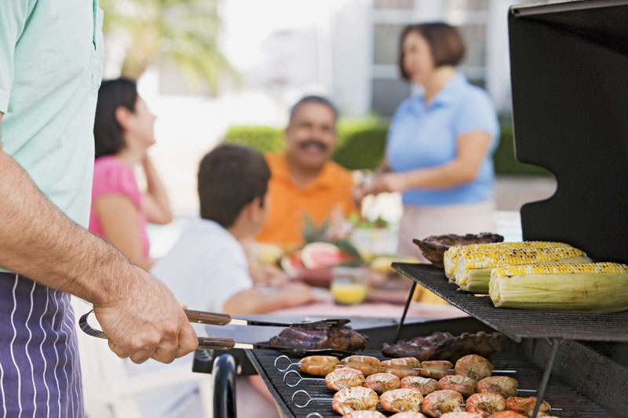

The Cohagan Cooking Challenge began as a simple rivalry between two brothers. Every year at Thanksgiving the brothers would ask their family to decide whose turkey was better. The family was never able to give the brothers a definitive answer so the brothers decided to take the contest to the general public. Who better than strangers to hurt your feelings and rub dirt in your wounds? Each year the brothers would come back with a different recipe to try and usurp the other. But of course, over time many from the public became interested. Over the years it has become our mission to bring the joy of competition to each of our attendees.
The Cohagan Cooking Challenge is a non-profit organization. Throughout October we raise funds for local childrens groups. All the money from entry fees (besides the pot winnings) goes to the local Kids for Change group, as well as the local orphanage. The childrens groups attend the festivities on the last two days of the competition (8/30 and 8/31). If you'd like to meet the kids you're helping we encourage you come around on those days. We thank each and every one of you for your contributions!
